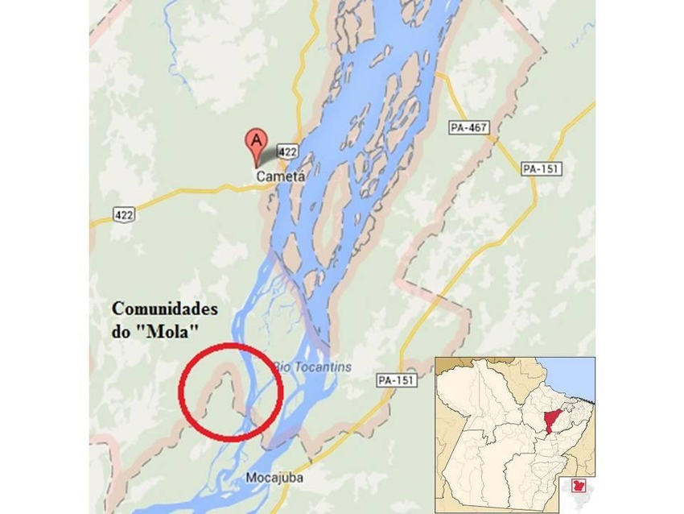
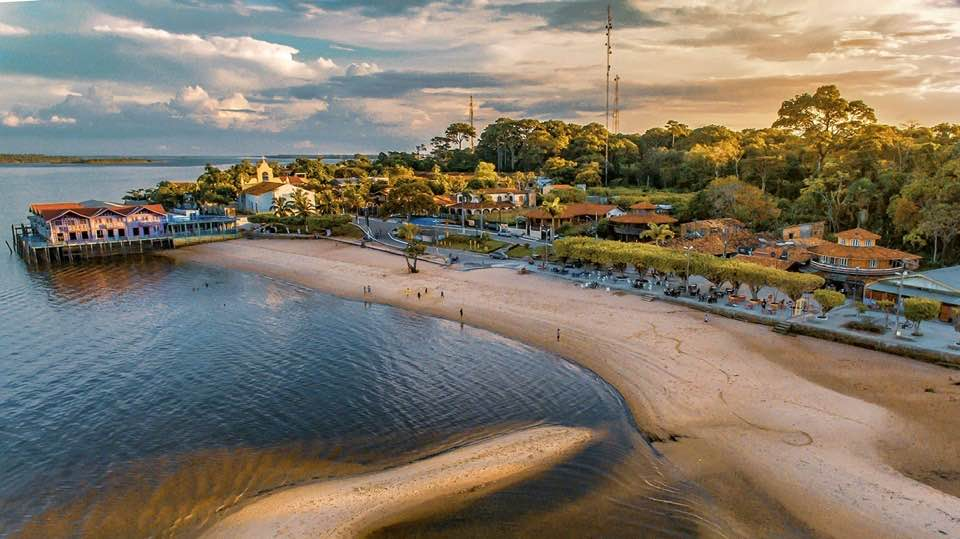
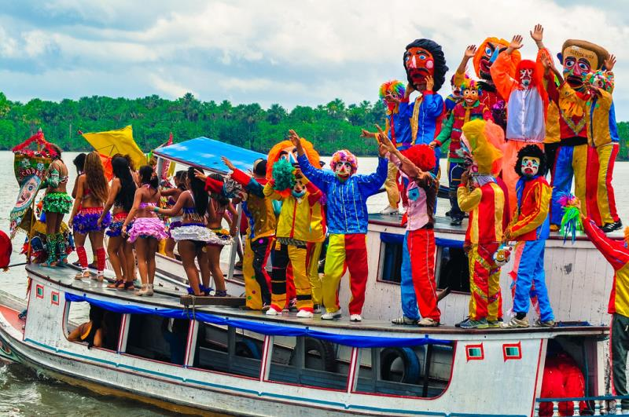
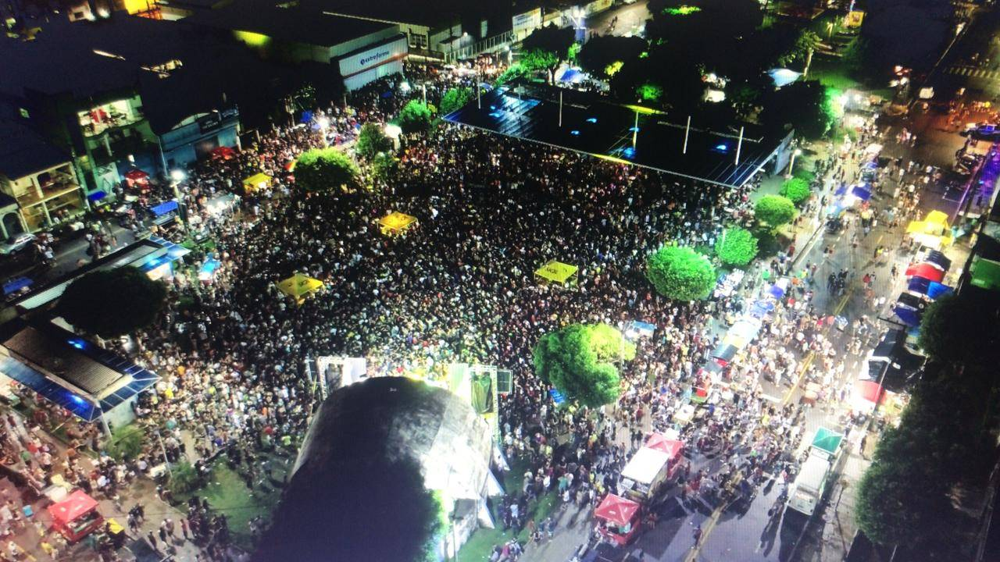

Cametá é um município do Estado do Pará, no Brasil, localizado à margem esquerda do Rio Tocantins,
num espaço que compreende cerca de 3km de extensão. Sua população estimada de acordo com o último
censo era de 134.100 habitantes. A cidade de Cametá limita-se ao norte com o município de Limoeiro
do Ajuru, ao sul com Mocajuba, ao leste com Igarapé Mirim e ao oeste com Oeiras do Pará. Fica numa
distância de aproximadamente 150 km em linha reta da capital paraense.
Por: Daniel Melo
Ler mais

Natureza, comida boa e tranquilidade.A praia fica às margens do rio Tocantins. São 3 quilômetros de
areias claras e águas tranquilas,
perfeito para o lazer de toda a família. Na orla estão os bares e restaurantes, oferecendo o que a
cidade tem de melhor na gastronomia, o Mapará frito acompanhado com o açaí.
Por: Daniel Melo
Ler mais

O “Carnaval das Águas” é um espetáculo que cruza os rios da Amazônia, uma tradição centenária que
surgiu em Cametá,
no nordeste do Pará, e encanta os ribeirinhos até hoje.
Por: Daniel Melo
Ler mais

“Domingueiras” que aconteceram na Praça da Cultura, centro de Cametá que são promovidas pela
prefeitura. Já os fofós de bairros e as concentrações são promovidas pelos próprios moradores.
Por: Daniel Melo
Ler mais
Há exatos 15 anos, o litoral paraense ganhava mais um representante no esporte mais popular do
mundo. Em 22 de junho de 2007 era fundado o Cametá Sport Club, na cidade de Cametá, capital do
Carnaval. Sem experiência e recursos necessários para regularizar uma equipe de futebol
profissional, um grupo de empresários da cidade se juntou ao Clube Atlético Vila Rica, de Belém,
para criar o Vila Rica/Cametá. A equipe nasceu vencedora. Logo no ano de sua criação, foi campeã da
Segunda Divisão do Campeonato Paraense.
Por: Daniel Melo
Ler mais